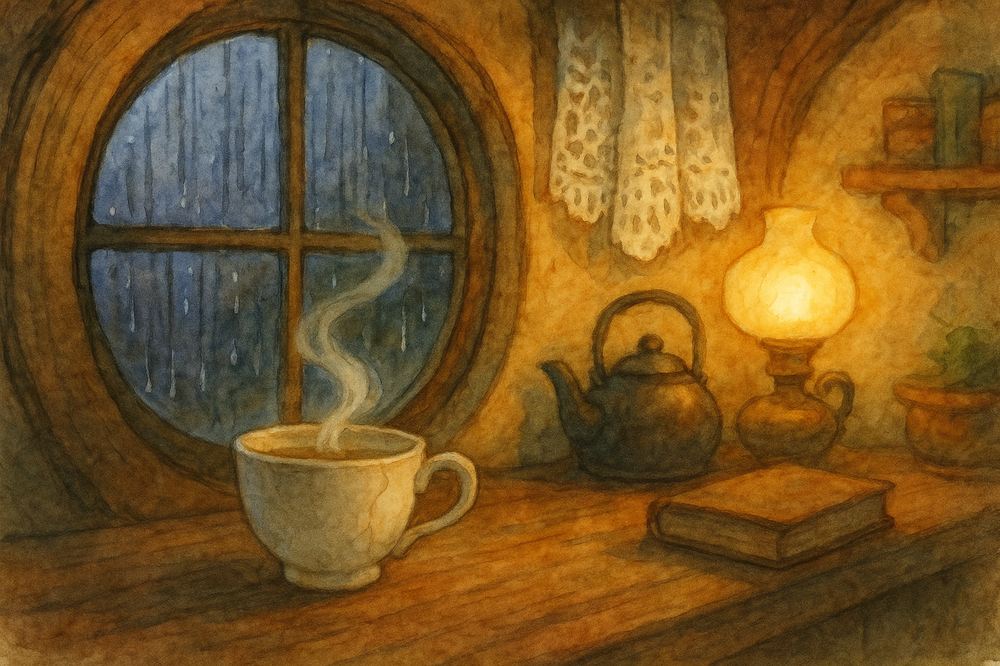

Fourth Age, in the Shire when rain taps at shutters and the kettle makes promises.
There are folk who say a cup remembers every mouth that has touched it. I do not know if that is true. But I know there are cups that remember more than they should.
I came by the teacup of far-hearing in the dull, honest way most dangerous things arrive: in a bundle of unwanted crockery, wrapped in newspaper and tied with twine, offered for almost nothing because it did not match the rest.
“Old Aunt’s,” the lad said, as if that explained the chip in the rim and the faint grey line that ran down one side like a hair caught in clay. “It’s still sound, sir. Mostly.”
I was in Michel Delving that morning on a small errand, and I had no need of another teacup. But it sat there among its cousins—plump, respectable cups with roses painted on their bellies—and this one looked oddly patient, as if it had waited out several owners and did not expect me to be any different. So I paid the few pennies asked, put it in my pocket (wrapped properly), and forgot it for a time.
It was only in the evening, when the rain began in earnest and the windows of Bag End went soft with lamplight, that I took it out and set it on the table. There is a comfort in using something slightly imperfect on a wet night; it makes you feel generous toward the world.
I brewed a pot of tea—nothing fancy, but good leaf—and poured it into the cup. The crack darkened as the hot liquor found it, and for a moment I thought it would leak. It did not. It held as a stubborn old thing holds: not by strength, but by refusal.
I took a sip and nearly choked, for I heard—quite clearly, as clear as if someone had leaned over my shoulder—two voices arguing in my pantry.
Now, there are only so many explanations a sensible hobbit tries before he begins to look foolish. I set the cup down and listened hard. The voices went on, low and peevish.
“He’s not in,” said one. “He is,” said the other. “I saw the light.” “Light don’t mean he’s in. Might be a cat.” “Cats don’t keep lamps.”
I rose at once, grabbed my walking-stick (which is not much use indoors, but it makes a fellow feel sturdier), and marched to the pantry door. It was shut. I opened it quickly.
There was nothing there but shelves, jars, and a respectable silence.
I returned to the table. The cup sat in its saucer like a small moon in a white dish. Steam curled from it. I put my ear close, as ridiculous as a child with a seashell.
And the voices were still there—only now I could hear the rain along with them, and the faint clink of a spoon, and the shuffle of feet on flagstones. It was not my pantry at all. It was someone else’s kitchen, laid over mine like a thin tracing-paper.
“Who are you?” I whispered to the cup, because I could not think of anything better to say.
The voices did not answer. They did not even pause. They went on about missing turnips and borrowed tins and whether Mrs. Twofoot had any sense at all.
I did not sleep much that night. I sat by the fire with the cup, taking small sips and listening. After a time the voices changed: the first pair went away, and a woman began to sing softly while she kneaded dough. Later still, a child cried for his father and was comforted with a story. Then, just before midnight, there came a sound of laughter—quick, helpless laughter—followed by a whispered conversation I could not quite catch, as if the speakers had moved farther from the hearth.
It felt, in a queer way, like travelling without leaving my chair.
In the morning the rain had cleared. The world was rinsed and bright. I told myself that the whole business was some trick of tiredness and old tea. But when I poured again, I heard a cock crow—not at Bag End, but far away, and a man calling out to a dog in a voice I did not know.
That was when the trouble began, for once you have a thing that gives you knowledge without effort, it is hard to keep your hands off it. I carried the cup about with me. I pretended it was just a cup, and not a window. I took a sip after breakfast and heard a neighbour’s complaint about his hedge. I took another at luncheon and caught two lasses planning a surprise for someone’s birthday. There were days when I learned more in half an hour than I would have learned in a season of walking and talking like a proper hobbit.
At first it seemed harmless. The Shire runs on gossip the way a mill runs on water: you can stop the wheel if you like, but the stream will still go by. Yet the cup made the wheel spin faster in my head, and after a while I found myself listening not because I cared, but because I could.
And then I heard something I was not meant to hear.
It was an afternoon of high thin clouds. I was alone, and the cup was warm in my hands. A man’s voice spoke, low and hurried. I could hear the scrape of a chair, and the flutter of paper.
“If you must say it,” the man said, “say it quickly.” “I won’t,” said a second voice—young, trembling. “Not unless you promise.” “I cannot promise what is not mine to give.” “Then it will be ours to carry,” said the young one.
There was a pause. In the pause I heard my own breath. It occurred to me, with a kind of cold shame, that I had no right to be present in that room—wherever it was—no right to hover over a moment as private as a wound.
Yet I stayed. I leaned closer. I sipped again.
“They said you were brave,” said the young voice. “They say many things,” replied the older. “I thought—” “Do not think of stories now,” the older voice snapped, and then softened. “Listen to me. If it goes ill, go to the Water and follow it until you find stone. There is a mark. You will know it.”
My hand shook. I set the cup down too hard. Tea slopped onto the saucer. The voices blurred, as if the cup itself had flinched.
I did not know the speakers. I did not know the place. But I knew the feeling: the tight, sharp moment when someone is handing another person a map made of fear.
All at once the cup felt heavy with other people’s lives. I saw, in my mind, all the kitchens and rooms it had opened to me: laughter, scolding, singing, the soft talk after supper when a family grows honest because the day is done. I had made myself a thief of it, and there are thefts that leave no empty shelves but still do harm.
I carried the cup to the sink and held it under the tap. Cold water poured in, clear as a warning. The crack darkened, and for a moment the cup gave a small sound—not breaking, but settling, like a house in winter.
Then the voices came again, faintly, as if from deeper down.
“Did you hear that?” said someone. “Hear what?” “Like a river in the walls.” “Nonsense,” said the other, though not with much conviction.
I turned off the tap at once. My heart thumped. So it was not only I who could listen. It could be heard from the other side as well—this strange crossing of rooms by way of clay and crack.
That decided me.
There are ways of putting an end to a thing like that, some quick and some slow. I did not want to smash the cup. It had done no wrong; it was only too willing to do my wrong for me. So I chose the slow way, as one chooses the slow way with old habits.
I took the cup outside and walked down to the Water. The banks were bright with wet grass, and the alder roots made little dark caves where the current curled. I found a place where the stream ran shallow over a bed of small stones.
I knelt and set the cup into the water. It filled at once. I turned it over so the water ran through it, again and again, rinsing it as you rinse a cloth that has taken a stain.
For a little while—because enchantments do not go politely all at once—I still heard snatches: a laugh, a kettle-lid, a name half-spoken. But the Water took them, carrying the sounds away. The cup grew quieter, and when I lifted it at last, it was only a cup again: chipped, cracked, and empty, with the honest silence of pottery.
I brought it home and set it on a high shelf where I keep things that teach me to mind my own business. It is still there. Now and then I pour tea into it when I have had too much to say. The crack holds, and the cup holds, and what it holds is only tea.
And if, on some rainy night, you find yourself straining to hear a whisper in the walls, do not blame the walls. Set down your cup. Listen instead to the fire, which tells the only story you have a right to at that hour.
— Bilbo